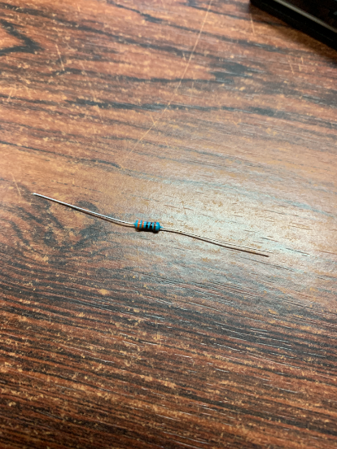

はじめに
あなたはラズパイを買って何をしますか?
そうですLチカです!!
今回はそのLチカについて解説します。
方法
接続方法
使用したもの
今回使用したものです。
使用したものの写真
では再び、必要なものを確認しましょう。 まずは抵抗です。330Ωのものを用意しましょう。

次に、LEDです。
今回は赤色を使いました。LEDは色によって仕様が違うので、よく確認してください。

そして、ブレッドボードです。
今回使うものは、はんだ付けしなくてよいので、電子工作体験にはうってつけかと思います。
これからブレッドボードのアルファベットが縦に書かれている穴を列、数字が横に書かれているものを行と呼ぶことにします。

ブレッドボードの説明
ブレッドボードは、前述のとおり、電子工作にはよく使われます。ブレッドボードには様々な種類がありますが、今回使用したものは差し込み式と呼ばれるものです。その名の通り、ジャンパワイヤをさしたり、LEDや抵抗を直接挿せます。
ブレッドボードは行で回路が導通して、列では導通していません。
ブレッドボードへ接続
さて、ブレッドボードへ接続しましょう!
今回作成する回路は、抵抗とLEDを接続した回路を作ります。
その前に、回路に電流が流れる流れを説明します。
回路は、プラス極からマイナス極へと電流が流れます。今回はそのことに留意して作ります。
なぜならば、今回の回路は極性を間違えると、LEDが壊れるからです...
それでは接続しましょう!
写真のように接続してください。

ここで、再び注意です。LEDには極性があります。足の長いほうがプラスなので、抵抗側にあるかどうかを確認してください。
接続出来たら、ジャンパワイヤでラズベリーパイと、LEDを接続します。
ジャンパワイヤのプラス極を抵抗の行に、ジャンパワイヤのマイナス極をLED側にそれぞれ接続してください。

上から見るとこんな感じです。


するとラズパイを電源を入れていて、正しく接続されていると、LEDが点灯するかと思います。ここで光らなかったら、もう一度やり直してください。
ジャンパワイヤや抵抗、LEDは奥まで挿す必要があります。
正しく挿すとこんな感じですが、

正しく挿さってないと、こんな感じです。

以上の手順でLEDがとりあえず光ります!!
プログラミングLピカ!
今回のガイドでは、C言語とPythonを用いた実行方法をご紹介します。
Python
ターミナル上で、
nano main.py
と入力すると、nanoが立ち上がります。
nanoの使い方は下のほうに出てきますが簡単に説明します。
nanoは初心者向けのCUIエディタ言われて、vimより簡単だといわれています。
一番のメリットは下のほうにキーボードのショートカットが表示されていることです。
とは言いつつも、やはり難しいものです。簡単に下のほうに出てるものの紹介です。
^キーは、Ctrlキーを意味しています。例えば^Cと書いてあるものを実行したかったら、Ctrlキーを押しながらCキーを押すという意味です。
ということでソースコードを入力しましょう!
# GPIOを扱うためモジュールをインポートする
import RPi.GPIO as GPIO
# 時間を扱うためモジュールをインポートする
import time
# GPIOに対応するピン番号
PNO = 3
# ピン番号の指定
# BOARDとすることで、ラズパイ間で共通にコードが使える
GPIO.setmode(GPIO.BOARD)
# GPIOのピン番号(ここでは3番ピン)を出力に設定する
GPIO.setup(PNO, GPIO.OUT)
# print⽂は、標準出力(ターミナルの画面上)に文字を表示する命令
# 何回LEDを点灯するか質問している
print("How many times?")
# 変数へキーボードから入力された値を代入している
# 変数は、値を保存する箱のようなもの
loopn = input()
# どれぐらいの間隔でLEDのオンとオフをするか聞いている
print("How long sleep?")
stop = input()
# 0~⼊⼒された数未満まで繰り返す
# iはカウンタ用の変数で、loopn回だけ繰り返す
for i in range(loopn):
# HighでLEDを光らせる
GPIO.output(PNO, GPIO.HIGH)
# その状態を保持する
time.sleep(stop)
# LowでLEDを消す
GPIO.output(PNO, GPIO.LOW)
time.sleep(stop)
# これは、GPIOをほかのプログラムからでも使えるようにするための終了処理
# これがないとLEDがオフのままになる
GPIO.cleanup()
上記のソースを実行するにはターミナル上で、
python main.py
と入力すると、指定した回数、間隔で動作します!
C言語
ターミナル上で、
nano main.c
と入力すると、nanoが立ち上がるので、下記に示したソースコードを入力してください。
#include <wiringPi.h> //GPIOを扱うためのライブラリ
#include <stdio.h> //printf関数を使うためのライブラリ
#define LED_PORT 8 //GPIOに対応するポート番号
#define LED_ON 1 //LEDがオン
#define LED_OFF 0 //LEDがオフ
//プログラムはmain関数から始まります
int main() {
//loopnはループの終了条件、stopはLEDの点滅間隔
int loopn, stop;
//配線の初期化
wiringPiSetup();
// ピン番号の指定
pinMode(LED_PORT, OUTPUT);
//printf文は標準出力へ出力する
//ループの回数を聞いている
printf("How many times?");
//scanfは変数にキーボードから入力した値を代入する関数
//ループの回数を入力して代入している
scanf("%d", &loopn);
//どれくらいの間隔か聞いている
printf("How long sleep?");
scanf("%d", & stop);
//iはループ用の変数
//loopnを満たさない回数つまり0<loopn回繰り返す
//i++でループのたびにカウンタを増やしている
for (int i = 0; i < loopn; i++) {
//LEDを光らせる
digitalWrite(LED_PORT, LED_ON);
//delay関数で間隔を指定する
delay(stop);
//0でLEDを消す
digitalWrite(LED_PORT, LED_OFF);
delay(stop);
}
return 0;
}
そして、入力して実行する際にはターミナル上で、以下のコマンドを入力してください。
make
makeはMakefileに書かれた内容を実行するという意味です。
gcc main.c -lwiringPi
./a.out
おわりに
ラズパイと言ったらLチカですよね。一度Lチカをするといろいろなことに手を出したくなりますよね
電子情報工学科では、このような電子工作をしています。
興味がわいたらJ科のシラバスを見るといいです。